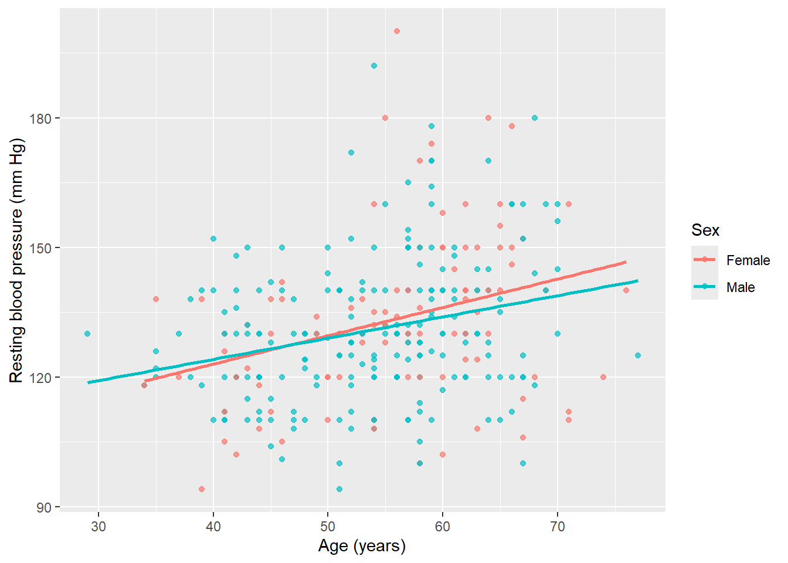
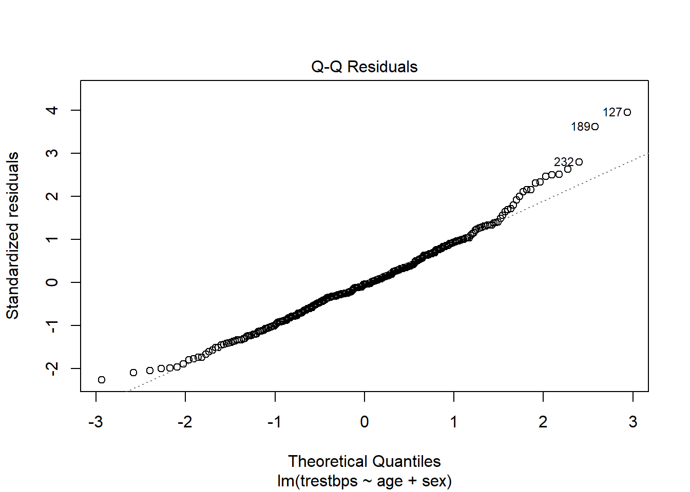
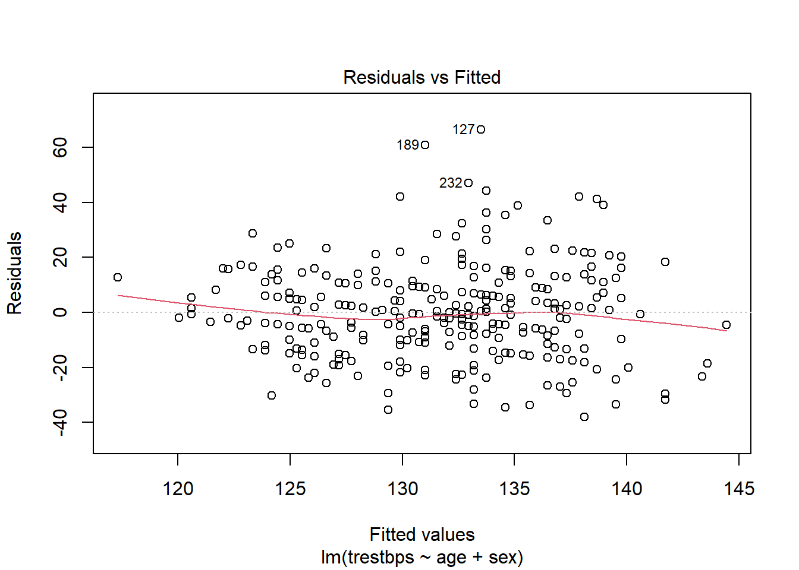

# A tibble: 2 × 7
sex n mean_trestbps sd_trestbps median_trestbps q1 q3
<fct> <int> <dbl> <dbl> <dbl> <dbl> <dbl>
1 Female 97 133. 19.4 132 120 140
2 Male 206 131. 16.7 130 120 140Medical Statistics - Answers lab 10
Integrated exercises with the Cleveland heart disease dataset
Part A: ANCOVA
A1. Research question
The research question is whether resting blood pressure (trestbps) differs between males and females after adjusting for age.
In model notation, this is assessed with:
\[ \text{trestbps} = \beta_0 + \beta_1 \times \text{age} + \beta_2 \times \text{sex} + \varepsilon \]
The coefficient for sex estimates the adjusted mean difference in resting blood pressure between males and females at the same age.
A2. Exploratory analysis
The mean resting blood pressure is about 133 mm Hg for females and 131 mm Hg for males. The distributions are quite similar, with both groups having a median close to 130-132 mm Hg and an interquartile range of approximately 120 to 140 mm Hg.

The scatterplot suggests a weak positive association between age and resting blood pressure. There is no strong visual evidence of a clearly non-linear relationship, so a linear adjustment for age is reasonable for this exercise.
A3. Additive ANCOVA model
Call:
lm(formula = trestbps ~ age + sex, data = heart_data)
Residuals:
Min 1Q Median 3Q Max
-38.125 -11.038 -0.838 10.587 66.507
Coefficients:
Estimate Std. Error t value Pr(>|t|)
(Intercept) 102.8155 6.2686 16.402 < 2e-16 ***
age 0.5478 0.1082 5.063 7.21e-07 ***
sexMale -1.3940 2.0928 -0.666 0.506
---
Signif. codes: 0 '***' 0.001 '**' 0.01 '*' 0.05 '.' 0.1 ' ' 1
Residual standard error: 16.91 on 300 degrees of freedom
Multiple R-squared: 0.08255, Adjusted R-squared: 0.07643
F-statistic: 13.5 on 2 and 300 DF, p-value: 2.439e-06 2.5 % 97.5 %
(Intercept) 90.4794612 115.151637
age 0.3348881 0.760724
sexMale -5.5123753 2.724295A4. Model assumptions and interaction


The Q-Q plot should be checked for large departures from normality. In this dataset, the residuals are mostly compatible with approximate normality, although some tail deviations may be present.
The residuals-versus-fitted plot should be checked for curvature and unequal spread. There is no strong pattern suggesting that the additive linear model is inappropriate, although the model is not expected to explain all variation in resting blood pressure.
Anova Table (Type III tests)
Response: trestbps
Sum Sq Df F value Pr(>F)
(Intercept) 71768 1 250.4720 < 2.2e-16 ***
age 7260 1 25.3374 8.328e-07 ***
sex 104 1 0.3633 0.5471
age:sex 149 1 0.5216 0.4707
Residuals 85673 299
---
Signif. codes: 0 '***' 0.001 '**' 0.01 '*' 0.05 '.' 0.1 ' ' 1Part B: Logistic regression and causal adjustment
B1. Preparing the outcome and exposure
0 1
Heart Disease 0 139
No Heart Disease 164 0The outcome is coded so that 1 is the event of interest: heart disease. The value 0 corresponds to no heart disease.
B2. Unadjusted model
Call:
glm(formula = target01 ~ chol, family = binomial, data = heart_data)
Coefficients:
Estimate Std. Error z value Pr(>|z|)
(Intercept) -0.989822 0.572848 -1.728 0.084 .
chol 0.003339 0.002271 1.470 0.142
---
Signif. codes: 0 '***' 0.001 '**' 0.01 '*' 0.05 '.' 0.1 ' ' 1
(Dispersion parameter for binomial family taken to be 1)
Null deviance: 417.98 on 302 degrees of freedom
Residual deviance: 415.78 on 301 degrees of freedom
AIC: 419.78
Number of Fisher Scoring iterations: 4 OR 2.5 % 97.5 %
(Intercept) 0.3716428 0.1209252 1.142180
chol 1.0033444 0.9988878 1.007821 OR 2.5 % 97.5 %
(Intercept) 0.3716428 0.1209252 1.14218
chol10 1.0339523 0.9889339 1.08102B3. Causal diagram
The DAG contains the following arrows:
- age -> cholesterol
- age -> heart disease
- sex -> cholesterol
- sex -> heart disease
- cholesterol -> heart disease
- heart disease -> chest pain type
flowchart LR age[Age] --> chol[Cholesterol] age --> hd[Heart disease] sex[Sex] --> chol sex --> hd chol --> hd hd --> cp[Chest pain type]
B4. Adjusted model
Call:
glm(formula = target01 ~ chol + age + sex, family = binomial,
data = heart_data)
Coefficients:
Estimate Std. Error z value Pr(>|z|)
(Intercept) -5.909350 1.095393 -5.395 6.86e-08 ***
chol 0.004829 0.002539 1.902 0.0572 .
age 0.062246 0.015120 4.117 3.84e-05 ***
sexMale 1.631814 0.303194 5.382 7.36e-08 ***
---
Signif. codes: 0 '***' 0.001 '**' 0.01 '*' 0.05 '.' 0.1 ' ' 1
(Dispersion parameter for binomial family taken to be 1)
Null deviance: 417.98 on 302 degrees of freedom
Residual deviance: 368.59 on 299 degrees of freedom
AIC: 376.59
Number of Fisher Scoring iterations: 3 OR 2.5 % 97.5 %
(Intercept) 0.002713949 0.0003171035 0.02322749
chol 1.004841016 0.9998524987 1.00985442
age 1.064224022 1.0331489166 1.09623381
sexMale 5.113139619 2.8223350453 9.26332145 OR 2.5 % 97.5 %
(Intercept) 0.002713949 0.0003171035 0.02322749
chol10 1.049478480 0.9985259652 1.10303099
age 1.064224022 1.0331489166 1.09623381
sexMale 5.113139619 2.8223350453 9.26332145Part C: Building a prediction model
C1. Candidate model
Call:
lm(formula = thalach ~ age + sex + cp + chol + fbs + trestbps,
data = heart_data)
Residuals:
Min 1Q Median 3Q Max
-56.595 -11.437 2.564 13.335 43.999
Coefficients:
Estimate Std. Error t value Pr(>|t|)
(Intercept) 187.98169 11.26288 16.690 < 2e-16 ***
age -0.97352 0.13553 -7.183 5.61e-12 ***
sex1 1.02288 1.26254 0.810 0.4185
cp1 3.87332 3.29957 1.174 0.2414
cp2 6.33685 2.46981 2.566 0.0108 *
cp3 1.30012 2.09375 0.621 0.5351
chol 0.03689 0.02292 1.610 0.1086
fbs1 -0.46173 1.63623 -0.282 0.7780
trestbps 0.07576 0.06904 1.097 0.2734
---
Signif. codes: 0 '***' 0.001 '**' 0.01 '*' 0.05 '.' 0.1 ' ' 1
Residual standard error: 19.71 on 294 degrees of freedom
Multiple R-squared: 0.2775, Adjusted R-squared: 0.2578
F-statistic: 14.11 on 8 and 294 DF, p-value: < 2.2e-16Anova Table (Type III tests)
Response: thalach
Sum Sq Df F value Pr(>F)
(Intercept) 108185 1 278.5688 < 2.2e-16 ***
age 20039 1 51.5998 5.612e-12 ***
sex 255 1 0.6564 0.4185
cp 16642 3 14.2838 1.030e-08 ***
chol 1006 1 2.5906 0.1086
fbs 31 1 0.0796 0.7780
trestbps 468 1 1.2041 0.2734
Residuals 114178 294
---
Signif. codes: 0 '***' 0.001 '**' 0.01 '*' 0.05 '.' 0.1 ' ' 1For categorical predictors with more than two categories, such as cp, the Type III ANOVA table tests the predictor as a whole rather than only testing one dummy coefficient.
C2. Model selection
For this prediction exercise, backward elimination was used. The full candidate model was fitted first, and then the predictor with the largest p-value was removed as long as its p-value was greater than 0.10. This is reasonable for a prediction model because the goal is to obtain a more parsimonious model that keeps predictors with useful predictive information.
# A tibble: 3 × 3
step removed p_value
<dbl> <chr> <dbl>
1 1 fbs 0.778
2 2 sex 0.429
3 3 trestbps 0.235[1] "age" "cp" "chol"
Call:
lm(formula = thalach ~ age + cp + chol, data = heart_data)
Residuals:
Min 1Q Median 3Q Max
-58.701 -11.489 2.667 13.802 43.475
Coefficients:
Estimate Std. Error t value Pr(>|t|)
(Intercept) 197.45207 9.05574 21.804 < 2e-16 ***
age -0.92273 0.13019 -7.088 9.97e-12 ***
cpAtypical angina 1.97796 4.99947 0.396 0.692660
cpNon-anginal pain -2.84347 4.63234 -0.614 0.539797
cpAsymptomatic -15.97952 4.42906 -3.608 0.000362 ***
chol 0.04241 0.02242 1.891 0.059539 .
---
Signif. codes: 0 '***' 0.001 '**' 0.01 '*' 0.05 '.' 0.1 ' ' 1
Residual standard error: 19.68 on 297 degrees of freedom
Multiple R-squared: 0.2723, Adjusted R-squared: 0.26
F-statistic: 22.22 on 5 and 297 DF, p-value: < 2.2e-16 2.5 % 97.5 %
(Intercept) 179.630527922 215.27360552
age -1.178934370 -0.66652072
cpAtypical angina -7.860912318 11.81682362
cpNon-anginal pain -11.959841240 6.27289858
cpAsymptomatic -24.695840637 -7.26320698
chol -0.001716395 0.08653757The final fitted model is:
\[ \widehat{\text{thalach}} = 197.45 - 0.923 \times \text{age} + \text{chest pain type coefficient} + 0.042 \times \text{cholesterol}. \]
With Typical angina as the reference category for chest pain type, the estimated chest-pain coefficients are approximately:
Atypical angina: 1.98Non-anginal pain: -2.84Asymptomatic: -15.98
C3. Prediction for a patient
The patient has:
- age: 62 years
- sex: female
- chest pain type: typical angina
- cholesterol: 240 mg/dl
- fasting blood sugar > 120 mg/dl: false
- resting blood pressure: 135 mm Hg
Only age, chest pain type, and cholesterol are used, because these are the predictors retained in the final model.
1
150.4215